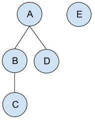

We're now waiting for the contest to start. Once the contest starts,
the problems will automatically load, and Problem A will display here.
You don't have to solve that problem first; you will be able to select
another problem from the list to the left. Once you've solved one
problem, don't forget to work on the others!
Overview | Problem A | Problem B | Problem C | Problem D
In the last of our many online rounds, contestants faced four problems.
Teaching Assistant presents a somewhat complex situation, but
the problem has a simple greedy solution. Forest University poses
the challenge of uniformly sampling tree traversals, and can be solved
via simulation. Rebel Against The Empire is a 3D geometry / graph
problem with a potentially tricky implementation. Finally, Go++
is a "wild card" problem about concurrency; it has a surprisingly simple
answer, although it is tough to see it!
52 minutes into the contest, every dataset had been solved at least once;
contestants raced to solve the three toughest datasets (the Larges for
B, C, and D). apiad was first to 100 points on the scoreboard at 1:50:30,
but had C-large wrong. xyz111 had the first complete set of correct
submissions, but with enough penalties to push the total time to
2:42:09; nobody else registered a perfect score, though, so that record stood.
Go++ ultimately had more correct Large attempts than Rebel (perhaps in part
because its point value was higher), and so it turned out to be necessary to
solve it to make the top 25, although the cutoff line was very close
right up until the end.
Congratulations to everyone who made it this far and participated in
the round. 25 contestants plus our defending champion
(Gennady.Korotkevich) will head to New York to face off in this year's
Finals on
August 5.
Cast
Problem A (Teaching Assistant): Written by Devendra Agarwal.
Prepared by Karol Pokorski.
Problem B (Forest University): Written and prepared by Petr
Mitrichev.
Problem C (Rebel Against The Empire): Written by Onufry
Wojtaszczyk. Prepared by Yerzhan Utkelbayev.
Problem D (Go++): Written by David Arthur. Prepared by Igor
Naverniouk.
Solutions and other problem preparation and review by Shane Carr, John
Dethridge, Minh Doan, Jackson Gatenby, Pablo Heiber, Andy Huang, Taman
(Muhammed) Islam, Dominik Schmid, and Ian Tullis.
Analysis authors:
- Teaching Assistant: Saurav Keshari Aryal, Alex Meed, and Steve Thomas
- Forest University: John Dethridge, Petr Mitrichev, and Ian Tullis
- Rebel Against The Empire: Pablo Heiber, Ian Tullis, and Onufry Wojtaszczyk
- Go++: Alex Meed
Teaching Assistant: Analysis
Let's define N as the number of days in the test. Notice that since a student is
not allowed to do nothing on a test day, the student must request at least N/2
problem sets. Further, there is no reason to request more than that, since the
extras cannot be submitted.
We'll begin with a dynamic programming solution that is sufficient for the Small
dataset, and then discuss a mathematical formula that solves the Large dataset.
A dynamic programming approach
Because we can only submit the problem we requested most recently, we can view
the problems that we hold as a stack, where requesting corresponds to pushing
and submitting the most recently requested problem corresponds to popping.
Consider what happens on day 1. Clearly, we must request a problem set, and we
now have to pick a day to submit it. Now, between the request and the
submission, we can push to and pop from the stack, but after we are finished,
the stack must contain the problem we requested on day 1, and nothing else.
That means we need to have an even number of days between our request on day 1
and the corresponding submission.
We can think of the period of time between our request and our submission as a
subproblem, and the time after the submission as another subproblem. Each of
those subproblems must leave the stack the way they found it, so we can use the
same set of rules that we used above for every subproblem.
Now, we'll express how to solve the problem in terms of recursion. At each
stage, we'll be looking at some range of days, from day i to day j. So the
subproblem (i,j) is to find the best possible score we can get over the days
from i to j. We'll also say we can't touch the existing entries on the stack
(corresponding to any days before i), and must leave the stack as we found it.
We can then solve the subproblem as we did the original problem: request a
problem set on day i, then pick where in the (i,j) interval to submit it such
that there's an even number of days between the request and the submission.
At this point, each of our choices divides the subproblem into two additional,
possibly-empty subproblems. For a subproblem of length 6, for example, here are
the ways to place the request and submission:
_ _ _ _ _ _
↓
R S _ _ _ _
R _ _ S _ _
R _ _ _ _ S
Given the pairs of request and submission days, how do we decide which type of
problem set to request? If we request the type that doesn't match the
assistant's mood on request day, the best score we can get is 5 points. But we
always get at least that much by requesting the type that matches the
assistant's mood, so we should always do that. Then, the score we get when we
submit just depends on whether the assistant's mood on submit day matches the
type of problem we requested: we get 10 points total if they match, and 5 if
they don't.
The empty subproblems are the base cases of our recursion. For larger problems,
we find, for each possible submission point, the score we get from requesting
and submitting that problem set (10 if the assistant's mood on request day
matches its mood on submit day, 5 otherwise), plus the optimal scores of the
subproblems. We can use this to recursively find the solution to the original
problem; memoizing the solutions for the subproblems yields a DP solution.
Because the memoization table is size O(N2) and it takes O(N)
iterations to fill each cell, this algorithm is O(N^3), which is
sufficient to solve the Small problem.
A formulaic approach
It's also possible to solve the problem with a simple mathematical formula based
on the input.
Count the number of even- and odd-numbered days on which the assistant is in the
mood for Coding and Jamming. That gives us four numbers, which we'll call CE,
CO, JE, and JO (for instance, CE is the number of even-numbered days on which
the assistant is in the mood for Coding). We will show that the maximum possible
score is:
S = 10 * (min(CE, CO) + min(JE, JO)) + 5 * abs(CE - CO).
We'll first show that this is an upper bound (we can't get a score higher than
S), then show that it is tight (we can get a score equal to S).
First, note that any request/submit pair for the same problem (which we'll just
call a pair) must have one even and one odd day; that is, for any problem set,
it was either requested on an odd day and submitted on an even day, or vice
versa. That must be true because we need an even number of days between the
request and the submission. Now, since we need an even Coding day and an odd
Coding day to make a pair where both days are Coding, the amount of those pairs
that we can make is equal to the minimum of CE and CO. We can apply the same
logic to Jamming. Then, we can pair up the leftovers; the amount of leftover
pairs is the amount by which CE and CO differ (you can show that JE and JO
differ by the same amount). No matter how we pair up the leftovers, there is no
way to form more matched pairs.
To show that this bound is tight, we will construct a solution that achieves
that upper bound. We make a list of the days in order. Then, whenever we see two
adjacent days with the same mood, mark the first one as a request and the second
as a submission, then remove those two days from our list. Observe that we can
continue making pairs on this list, and they'll be valid on the real list (it's
impossible for a new pair to be halfway inside and halfway outside any pair that
we've removed, since we only remove pairs when there's nothing inside them).
Continue this process until we can't anymore. At this point, since there aren't
any adjacent days with the same mood, the mood must alternate between days. But
that means that all even-numbered days have the same mood, and all odd-numbered
days have the other mood. So we can pair all of those up, completing the proof.
A greedy approach
If you're curious, it's also possible to use a greedy stack-based algorithm to
solve the Large problem. Our algorithm proceeds from left to right, and at each
point decides whether to request or submit. We maintain a stack of problem sets
that we hold, where a request is a push and a submit is a pop, then select our
action each day as follows:
- If we have no unsubmitted problem sets, request.
- If we've made N/2 requests thus far, where N is the number of days in the test, submit.
- If the top of the stack contains a problem set that matches the assistant's mood, submit.
- Otherwise, request.
It's fairly difficult to see why this is valid on its own, but we can show that
this also obeys the formula that we give above.
Both algorithms (the stack algorithm and the adjacent pair algorithm) find an
adjacent pair with the same mood some number of times; we'll call these hits.
Pairs with a different mood are misses. It remains to prove that the stack
algorithm gets the optimal number of hits.
In most cases, both algorithms hit and miss in the same places. Intuitively,
steps 3 and 4 of the stack algorithm correspond to finding and removing
adjacent pairs with the same mood. Then, steps 1 and 2 clean up the remaining
unmatched pairs.
There are some corner cases, however, where the algorithms don't precisely
match. Take the input CJCJJC, for example: the stack algorithm produces RRRSSS,
while the adjacent-pairs algorithm results in RRSRSS.
All of these corner cases occur when there's an unmatched pair that the stack
algorithm doesn't match, failing to see that there's a matched pair later on at
the same level. In other words, they all look like the following. (You can swap
the Js and Cs, but we'll use the case that we show below without loss of
generality.)
... J ... C ... J ... J ...
Then, the stack algorithm requests for the first two and submits for the last
two, while the adjacent pairs algorithm matches the second pair, then the first
pair. Notice that these have the same result either way: there's always one
unmatched pair and one matched pair. Hence, the algorithms both produce the
optimal score, even though they may attain it in different ways.
Forest University: Analysis
An unusual problem
Small-only problems are relatively rare in Code Jam. Sometimes, as with 2012's Speaking in Tongues, this is because there is no natural way (or compelling reason) to split the idea into two levels. In other cases, like Password Security from I/O 2016 and Proper Shuffle from Round 1A 2014, this is because we have a randomized solution in mind and want contestants to be able to try again if necessary, even if the probability of a contestant's optimal solution actually failing due to chance is very small. The Forest University problem is Small-only for both of these reasons. We could have added another Small dataset small enough to solve precisely via dynamic programming, but we didn't think it would add useful resolution to help us pick our 26 advancers.
Clearly, with up to 100 courses, there are far too many course sequences to enumerate. The problem has an unusually relaxed tolerance for less precise answers, so it is a natural candidate for a simulation-based approach: we can generate course schedules and check whether they contain the cool substrings. Unusually for a simulation problem, though, the challenge here is to figure out how to do the simulation correctly even once! How do we sample the set of all course sequences uniformly at random?
A weighted-sampling method
Some pen and paper analysis of a small forest can reveal a simple rule that is sufficient to guide our simulations. Let's consider a case with five courses A, B, C, D, and E; A and E are basic, A is the prerequisite of both B and D, and B is the prerequisite of C.

Then there are fifteen possible orders in which to take the courses: ABCDE, ABCED, ABDCE, ABDEC, ABECD, ABEDC, ADBCE, ADBEC, ADEBC, AEBCD, AEBDC, AEDBC, EABCD, EABDC, EADBC. Notice that four-fifths of these begin with A and one-fifth begin with E. A is a root node with a total of 4 descendants (including itself); E is a root node with a total of 1 descendant (including itself). This is a promising pattern, and it is not coincidental! It suggests a method for building up a course string while sampling uniformly: keep choosing one of the available courses, with probability proportional to the size of that course's subtree (itself plus all its descendants).
To apply this method to the example above: we start with an empty course string, and at first, we can only choose either A or E. A has 4 descendants including itself, and E has 1, so we choose A with probability 4/5 and E with probability 1/5. Suppose that we choose A. Now we have three choices for the next course: B, D, and E. B has 2 descendants including itself; D has 1; E has 1. So, we choose B with probability 2/4, D with probability 1/4, and E with probability 1/4. Suppose that we choose D. Now we have two choices: B and E; we choose these with probability 2/3 and 1/3, respectively. We continue in this way until we've built a full sequence.
Why does this work? Speaking more generally: let's add a single root node to be the parent of all nodes with no prerequisites. We can now recursively compute, for each subtree, a schedule of just the classes in that subtree. Suppose that the subtree has root node V and size S. First, we compute a schedule for each subtree whose root is one of the children of V. Then, we put V first in the new schedule we are creating, and we choose an assignment (uniformly at random) of the remaining S-1 positions to each of the subtrees, such that each subtree is assigned as many positions as it has nodes. Then, we copy the ordering for each subtree into that subtree's positions. This results in a uniformly randomly chosen schedule.
Since we are picking a uniformly random assignment for each subtree, then interleaving them together uniformly randomly, the fraction of possible orders in which a given top-level course (i.e. the root of a certain subtree) appears first can be computed using a multinomial coefficient. For example, if we have to interleave A elements from one subtree and B elements from another subtree, the total number of ways to do so is (A+B)! / (A! × B!). The number of these ways that start with an element from subtree A is (A+B-1)! / ((A-1)! × B!), and the number of these ways that start with an element from subtree B is (A+B-1)! / (A! × (B-1)!). The ratio between these is (A! × (B-1)!) / ((A-1)! × B!), and this reduces to A / B. This explains why it suffices to sample proportionately to the size of each subtree.
A surprisingly elegant method
Generating a random sequence is equivalent to assigning distinct numbers from 1 to N to
nodes in our forest, in such a way that the number of a node is smaller than the number of all its descendants. Let's start with any of the N! possible assignments, chosen uniformly. Now let's go through nodes from top to bottom, and if a node is not the smallest in its subtree, we swap its number with the smallest. This generates sequences uniformly, since each sequence can be obtained from P different permutations, where P is the product of sizes of subtrees of all nodes. The probability that a given node X is the smallest (once it's available to be chosen) is proportional to the size of the tree it is rooting, because any of those nodes that get the smallest number will "give" it to X.
But will we get a precise enough answer?
If we check K uniformly generated sequences, and the true probability to find a given substring is p, then the fraction of those K sequences that contain this substring follows a binomial distribution with parameters K, p, which we can approximate with a normal distribution with mean p and standard deviation sqrt(p ×
(1 - p) / K).
(This Wikipedia article has some guidelines on when this approximation is valid.) If we run 10000 iterations, this is at most 0.5 / 100=5e-3, so the required precision of 3e-2 is 6 standard deviations. So, the probability of having one particular answer incorrect is roughly 1 in 500 million, which means that the probability of having at least one of the 500 required answers incorrect is at most 1 in a million.
The error bounds are generous enough that, with a fast enough implementation, the problem is solvable in slower languages such as Python.
Rebel Against The Empire: Analysis
Small dataset
Under the Small limits, every asteroid is stationary, and so there is no incentive to wait on an asteroid for a more favorable configuration of asteroids to emerge before jumping. Time and the security forces are completely unimportant, since it is possible to complete any series of jumps instantaneously; we only need to worry about distance. Specifically, we want to find the path from asteroid 0 to asteroid 1 that minimizes the maximum jump distance.
The number of asteroids is small (N = 1000), so there are many viable ways to accomplish this. One is to binary search on the maximum jump distance; for any maximum distance that we want to check, we can just start at asteroid 0, traverse the graph while making jumps that are shorter than or equal to that distance, and see whether we can reach asteroid 1. Another option is to use Prim's algorithm: we can start with just vertices (and no edges), and build up the graph by adding edges, starting with the ones with the smallest distances. The distance of the added edge that first causes asteroid 0 to be connected to asteroid 1 in some way is our answer. Kruskal's algorithm is another similar and complementary option. Dijkstra's algorithm can be adapted as well -- just have each node keep track of the maximum distance of any one of the jumps used to reach a node, rather than the cumulative distance to get there.
Large dataset
We can't just explore the graph (or build it up) as before, since it now matters when we make our jumps as well as where we jump to, and we may need to jump back and forth between the same pair of asteroids to throw off the security forces. We'll reuse the strategy of binary searching on jump distance; it turns out to be more convenient to work with squares of distances, so we will find the minimum squared jump distance instead. We just need a way of verifying whether a given maximum squared distance is large enough to allow an escape plan.
Let's consider some pair of asteroids and how the squared distance between them changes as a function of time. The squared distance equals the square of the difference of the linear equations for the two asteroids; that difference is given by a quadratic equation with a positive (or zero) term before the square of time. This function (plotted on a graph of squared distance versus time) could be a parabola pointing upward or a horizontal line, depending on the relative velocities of the asteroids. If we impose a maximum squared jump distance, it corresponds to drawing a horizontal line on the graph. There may be some time range during which the squared distance between the asteroids is below that line, and so the asteroids are close enough that we can jump between them. The key observation is that because the function is a parabola pointing upward or a horizontal line, this must always be a single interval of time (which might be the universe or empty). There cannot be multiple such intervals; it will never be possible for two asteroids to get within a certain distance of each other, then move farther apart than that, then move back within that distance.
The asteroid field is a complete graph of nodes: there is an edge between every two of them. However, as we have seen, not every edge is necessarily open to us at all times; for every edge, there is some time (possibly before the problem starts) at which it opens, and some time (possibly infinity) at which it closes. Given the maximum squared jump distance that we want to check, we can calculate these intervals for every edge.
As long as we have at least one edge open from our current node, we can avoid the security forces (and keep resetting their "clock") by jumping back and forth instantaneously along that edge. However, there may be dangerous windows of time (larger than S) during which we cannot remain on a given node, because there will be no edges available. For each node, we can order the edges by the time at which they open, and then look for these dangerous windows. We can handle them by splitting the node into multiple unconnected nodes representing the same original node at different intervals of time; this will prevent us from remaining on a node longer than we could. Any edge from the original node must attach to exactly one of the new nodes; if it attached to more than one, there would have been no dangerous window necessitating that split-up in the first place. So this splitting of nodes does not cause the number of edges to grow, and the size of the whole graph is still O(N2).
Then, all we have to do is run Dijkstra's algorithm on the new graph. When we arrive at a node, we can only take the outgoing edges which haven't been closed yet, and the time at which we take them is the max of the current time and the time in which they open (so that we do not travel back in time). For each node, we keep track of the earliest possible time we can get there (not the maximum of the jump distances needed to get there, as we did in the solution to the Small dataset; the way we have established edge opening and closing times already takes the maximum distance into account). If we can reach the destination node at all, then our candidate maximum squared jump distance is valid.
Go++: Analysis
To make the analysis a tiny bit easier to follow, we'll typeset strings
(B, G, and output from the Go++ programs) in monospace font,
instructions from the first program in normal font, and instructions from the
second program with an underline.
First, let's try to figure out when the problem is impossible to solve. It's
clearly impossible when B is in G; that case is even in the
sample input. What about otherwise?
Surprisingly, if B is not in G, the problem is
always solvable.
To prove this, I'll construct two Go++ programs that, when run as described in
the problem statement, can produce any L-length string
except B. That sounds harder than making one that just produces
the strings in G, but sometimes, making the problem more difficult is a
great way to gain the insight you need to solve the original problem. For this
problem in particular, the set G is a red herring!
The first program
Given an input string B, construct the first program as follows:
- Start with the inverse of every character of B (
0
↦ 1, 1 ↦ 0).
- Add a ? instruction after every 0 or 1 instruction.
For instance, if
B =
111, which could appear on the Small
input, the first program is 0?0?0?. If
B =
010, which could
only appear on the Large input, the first program is 1?0?1?.
Why does this work? Notice that by default, this program generates the opposite
of B. In order to generate a different string, we need to override one
or more of the ? instructions; that is, the programs need to be interleaved
such that right before the ? from the first program, some other instruction
from the second program changes what it prints. For instance, given the first
program 1?0?1?, we can print 011 instead of 101 using
the second program 01, if it's interleaved as follows:
10?01?1?. In order to print B, we need to override all
three ? instructions.
So how do we prevent that from happening? We write a second program that cannot
override all three ? instructions. Our solution differs for the Small and Large
inputs.
The second program (Small)
For the Small input, B is always a string of 1s. That means
the first program is always 0?, repeated L times. For instance, if
B = 111, the first program is 0?0?0?.
Our second program needs to be able to override any two of those ?
instructions; that way, we can print any output with up to two 1s.
However, we can't override all three ? instructions, since that means our
program might print B. So we need a second program that contains
L-1 1s, but not L 1s. The solution to this is
fairly simple: our second program simply consists of 1, repeated
L-1 times. For instance, if B = 111, the second
program is 11.
The second program (Large)
To solve the problem for arbitrary B, we need a second program that,
when taken as a string, has every (L-1)-length string as a subsequence
(so we can print any string except B), but doesn't have B as a
subsequence. (Here, we use "subsequence" to mean any set of elements, ordered
as they appear in the original sequence; they need not be adjacent.) We'll
discuss how to produce such a program shortly.
Now, with our first program and this hypothetical second program, we can
produce any L-length string except B. That's because the second
program has every possible subsequence of length L-1, so we can override
up to L-1 of the ? instructions of the first program. However, we cannot
override all L of them to produce B, because the second program
doesn't have B as a subsequence.
There are many ways to generate the second program. This one won't produce the
shortest program, but it is perhaps the easiest to explain:
- Start with a copy of B, excluding the last character.
- Replace each character with a two-character sequence as follows:
0 ↦ 10, 1 ↦ 01.
For instance, if
B =
010, the second program is
1001. The first
0 becomes
10, the
1
becomes
01, and we ignore the last character of
B.
We outlined the two requirements above for the second program to be valid:
- The second program must have every (L-1)-length string as a
subsequence.
- The second program must not contain B as a subsequence.
Now, we will show that the steps above give us a second program that satisfies
these requirements.
To get any (L-1)-length subsequence, split the second program into pairs
of adjacent instructions. Each pair contains a 0 and a 1, since that's how we
built the program. So we just pick one character from each pair, and we have
any (L-1)-length string!
Now, let's try to get B as a subsequence of our second program. Say
B = 010 and the second program is 1001. In order to
get 010 as a subsequence, we start from finding the first 0 in 1001,
which occurs at the second character. Next we find the first 1 after that,
which is the fourth character. The pattern continues: because of how we've
built the second program, we always go through two characters whenever we try
to find B as a subsequence. And because the second program only has
2L-2 characters, we can't find all of B as a subsequence.
Therefore, our second program is valid.
 Submissions
Submissions